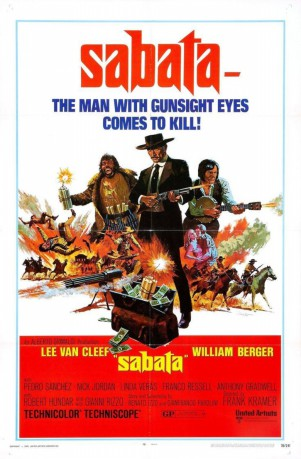
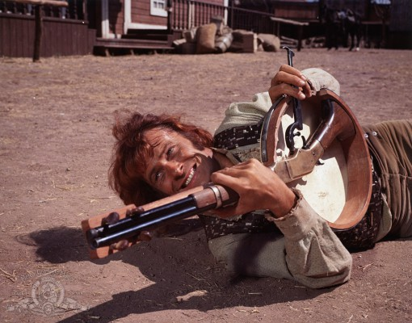

#4253 Sabata
 
 IMDB-Wertung: 6.8 / 10
IMDB-Wertung: 6.8 / 10  Metascore: 0
Metascore: 0 
Der ehemalige Offizier Sabata kommt in eine Stadt und klärt dort einen Bankraub auf. Er spielt die Bürger der Stadt, welche hinter dem Bankraub stehen, gegeneinander aus. Auch sein ehemaliger Kumpan Banjo hält sich in dem Ort auf und versucht ebenfalls aus der Situation Kapital zu schlagen. Als Hintermann des Raubes wird der Großgrundbesitzer Stengel ermittelt, welcher wiederum versucht Banjo gegen Sabata anzuheuern. Sabata kassiert jede Belohnung, die er bekommen kann, schließlich sogar das Geld, das auf seinen eigenen Kopf ausgesetzt ist und das sich eigentlich Banjo verdienen wollte.
Jahr: 1969
Dauer: 106 Minuten
FSK: 16
Land: Italien Studio: United ArtistsTonspuren:
Untertitel:
Auflösung: 1080p (1920x824) Größe: 6748 MB
Genre: Western
Regisseur: Gianfranco Parolini
Drehbuch: John Michael Hayes
Soundtrack:
Darsteller:
 Lee Van Cleef als Sabata
Lee Van Cleef als Sabata-  William Berger als Banjo
- Ignazio Spalla als Carrincha
- Linda Veras als Jane
- Aldo Canti als Indio
 Franco Ressel als Stengel
Franco Ressel als Stengel- Antonio Gradoli als Ferguson
- Claudio Undari als Oswald, Stengel Henchman
- Gianni Rizzo als Judge O'Hara
- Spartaco Conversi als Slim, Stengel Henchman
- Carlo Tamberlani als Nichols
 Luciano Pigozzi als False Father Brown
Luciano Pigozzi als False Father Brown- Marco Zuanelli als Sharky, Gunman Hired by Stengel
- Franco Marletta als Captain
- Andrea Aureli als Daniel
- John Bartha als Daugherty City Sheriff
- Giuseppe Mattei als
 Romano Puppo als Rocky Bendato, Stengel Henchman
Romano Puppo als Rocky Bendato, Stengel Henchman- Vittorio André als Logan , uncredited
- Fortunato Arena als Henchman at Ranch , uncredited
- Bruno Ariè als Henchman at Ranch , uncredited
- Gino Barbacane als Stratford, Guard , uncredited
- Luciano Bonanni als Townsman , uncredited
- Sisto Brunetti als Stengel Henchman , uncredited
 Omero Capanna als Hitman , uncredited
Omero Capanna als Hitman , uncredited- Luigi Ciavarro als Clayton Brother , uncredited
- Aldo Formisano als Townsman , uncredited
- Gilberto Galimberti als Shotgun , uncredited
- Alfonso Giganti als Croupier , uncredited
- Rodolfo Lodi als Father Brown , uncredited
- Gino Marturano als McCallum , uncredited
- Ana María Noé als Sharky's Mother , uncredited
- Franco Pasquetto als Clayton Brother , uncredited
- Fulvio Pellegrino als Townsman , uncredited
- Mimmo Poli als Hotel Workman , uncredited
- Amerigo Santarelli als Guard , uncredited
- Angelo Susani als Henchman at Hotel , uncredited
- Bruno Ukmar als Jumping Kid, a.k.a. Alley Cat , uncredited
Datei: X:\HD-Western-Collections\Sabata\Sabata (1969, FSK16, 1920x824).mkv seit 26.08.2016
Festplatte: HD Eastern+Western
 Alle Filme aus Gruppe 'HD-Western-Collections\Sabata'
Alle Filme aus Gruppe 'HD-Western-Collections\Sabata'